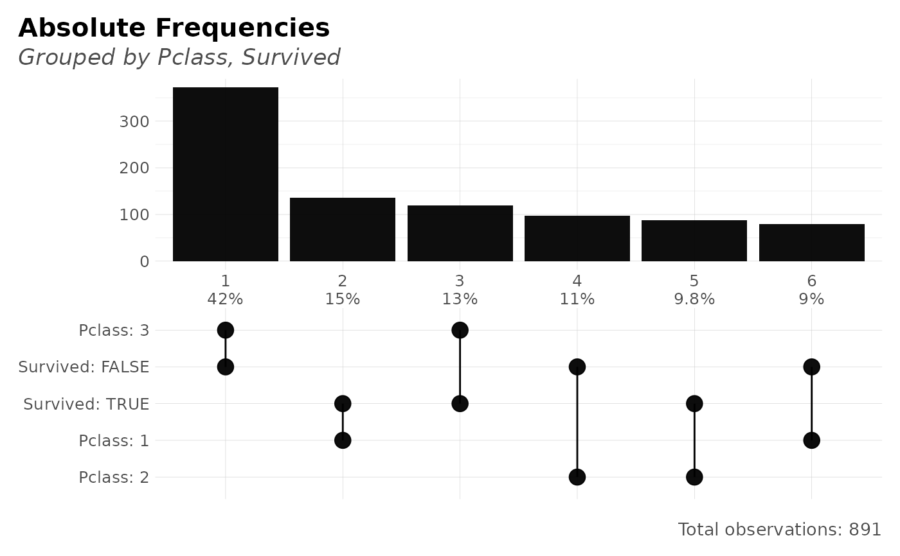

Plot frequencies of multiple categories within a data.frame in
a new fancy way. Tidyverse friendly, based on lares::freqs(),
no limits on amount of features to evaluate.
Arguments
- df
Data.frame
- ...
Variables. Variables you wish to process. Order matters. If no variables are passed, the whole data.frame will be considered
- top
Integer. Filter and plot the most n frequent for categorical values. Set to NA to return all values
- rm.na
Boolean. Remove NA values in the plot? (not filtered for numerical output; use na.omit() or filter() if needed)
- abc
Boolean. Do you wish to sort by alphabetical order?
- title
Character. Overwrite plot's title with.
- subtitle
Character. Overwrite plot's subtitle with.
See also
Other Frequency:
freqs(),
freqs_df(),
freqs_list()
Other Exploratory:
corr_cross(),
corr_var(),
crosstab(),
df_str(),
distr(),
freqs(),
freqs_df(),
freqs_list(),
lasso_vars(),
missingness(),
plot_cats(),
plot_df(),
plot_nums(),
tree_var()
Other Visualization:
distr(),
freqs(),
freqs_df(),
freqs_list(),
noPlot(),
plot_chord(),
plot_survey(),
plot_timeline(),
tree_var()
Examples
Sys.unsetenv("LARES_FONT") # Temporal
data(dft) # Titanic dataset
df <- freqs_plot(dft, Pclass, Survived)
#> Maybe you meant one of these:
#> 'C059-BdIta', 'C059-Bold', 'C059-Italic', 'C059-Roman', 'D050000L', 'DejaVuMathTeXGyre', 'DejaVuSans', 'DejaVuSans-Bold', 'DejaVuSans-BoldOblique', 'DejaVuSans-ExtraLight', 'DejaVuSans-Oblique', 'DejaVuSansCondensed', 'DejaVuSansCondensed-Bold', 'DejaVuSansCondensed-BoldOblique', 'DejaVuSansCondensed-Oblique', 'DejaVuSansMono', 'DejaVuSansMono-Bold', 'DejaVuSansMono-BoldOblique', 'DejaVuSansMono-Oblique', 'DejaVuSerif', 'DejaVuSerif-Bold', 'DejaVuSerif-BoldItalic', 'DejaVuSerif-Italic', 'DejaVuSerifCondensed', 'DejaVuSerifCondensed-Bold', 'DejaVuSerifCondensed-BoldItalic', 'DejaVuSerifCondensed-Italic', 'DroidSansFallbackFull', 'Lato-Black', 'Lato-BlackItalic', 'Lato-Bold', 'Lato-BoldItalic', 'Lato-Hairline', 'Lato-HairlineItalic', 'Lato-Heavy', 'Lato-HeavyItalic', 'Lato-Italic', 'Lato-Light', 'Lato-LightItalic', 'Lato-Medium', 'Lato-MediumItalic', 'Lato-Regular', 'Lato-Semibold', 'Lato-SemiboldItalic', 'Lato-Thin', 'Lato-ThinItalic', 'LiberationMono-Bold', 'LiberationMono-BoldItalic', 'LiberationMono-Italic', 'LiberationMono-Regular', 'LiberationSans-Bold', 'LiberationSans-BoldItalic', 'LiberationSans-Italic', 'LiberationSans-Regular', 'LiberationSansNarrow-Bold', 'LiberationSansNarrow-BoldItalic', 'LiberationSansNarrow-Italic', 'LiberationSansNarrow-Regular', 'LiberationSerif-Bold', 'LiberationSerif-BoldItalic', 'LiberationSerif-Italic', 'LiberationSerif-Regular', 'NimbusMonoPS-Bold', 'NimbusMonoPS-BoldItalic', 'NimbusMonoPS-Italic', 'NimbusMonoPS-Regular', 'NimbusRoman-Bold', 'NimbusRoman-BoldItalic', 'NimbusRoman-Italic', 'NimbusRoman-Regular', 'NimbusSans-Bold', 'NimbusSans-BoldItalic', 'NimbusSans-Italic', 'NimbusSans-Regular', 'NimbusSansNarrow-Bold', 'NimbusSansNarrow-BoldOblique', 'NimbusSansNarrow-Oblique', 'NimbusSansNarrow-Regular', 'NotoColorEmoji', 'NotoMono-Regular', 'NotoSansMono-Bold', 'NotoSansMono-Regular', 'P052-Bold', 'P052-BoldItalic', 'P052-Italic', 'P052-Roman', 'StandardSymbolsPS', 'URWBookman-Demi', 'URWBookman-DemiItalic', 'URWBookman-Light', 'URWBookman-LightItalic', 'URWGothic-Book', 'URWGothic-BookOblique', 'URWGothic-Demi', 'URWGothic-DemiOblique', 'Z003-MediumItalic'
#> Maybe you meant one of these:
#> 'C059-BdIta', 'C059-Bold', 'C059-Italic', 'C059-Roman', 'D050000L', 'DejaVuMathTeXGyre', 'DejaVuSans', 'DejaVuSans-Bold', 'DejaVuSans-BoldOblique', 'DejaVuSans-ExtraLight', 'DejaVuSans-Oblique', 'DejaVuSansCondensed', 'DejaVuSansCondensed-Bold', 'DejaVuSansCondensed-BoldOblique', 'DejaVuSansCondensed-Oblique', 'DejaVuSansMono', 'DejaVuSansMono-Bold', 'DejaVuSansMono-BoldOblique', 'DejaVuSansMono-Oblique', 'DejaVuSerif', 'DejaVuSerif-Bold', 'DejaVuSerif-BoldItalic', 'DejaVuSerif-Italic', 'DejaVuSerifCondensed', 'DejaVuSerifCondensed-Bold', 'DejaVuSerifCondensed-BoldItalic', 'DejaVuSerifCondensed-Italic', 'DroidSansFallbackFull', 'Lato-Black', 'Lato-BlackItalic', 'Lato-Bold', 'Lato-BoldItalic', 'Lato-Hairline', 'Lato-HairlineItalic', 'Lato-Heavy', 'Lato-HeavyItalic', 'Lato-Italic', 'Lato-Light', 'Lato-LightItalic', 'Lato-Medium', 'Lato-MediumItalic', 'Lato-Regular', 'Lato-Semibold', 'Lato-SemiboldItalic', 'Lato-Thin', 'Lato-ThinItalic', 'LiberationMono-Bold', 'LiberationMono-BoldItalic', 'LiberationMono-Italic', 'LiberationMono-Regular', 'LiberationSans-Bold', 'LiberationSans-BoldItalic', 'LiberationSans-Italic', 'LiberationSans-Regular', 'LiberationSansNarrow-Bold', 'LiberationSansNarrow-BoldItalic', 'LiberationSansNarrow-Italic', 'LiberationSansNarrow-Regular', 'LiberationSerif-Bold', 'LiberationSerif-BoldItalic', 'LiberationSerif-Italic', 'LiberationSerif-Regular', 'NimbusMonoPS-Bold', 'NimbusMonoPS-BoldItalic', 'NimbusMonoPS-Italic', 'NimbusMonoPS-Regular', 'NimbusRoman-Bold', 'NimbusRoman-BoldItalic', 'NimbusRoman-Italic', 'NimbusRoman-Regular', 'NimbusSans-Bold', 'NimbusSans-BoldItalic', 'NimbusSans-Italic', 'NimbusSans-Regular', 'NimbusSansNarrow-Bold', 'NimbusSansNarrow-BoldOblique', 'NimbusSansNarrow-Oblique', 'NimbusSansNarrow-Regular', 'NotoColorEmoji', 'NotoMono-Regular', 'NotoSansMono-Bold', 'NotoSansMono-Regular', 'P052-Bold', 'P052-BoldItalic', 'P052-Italic', 'P052-Roman', 'StandardSymbolsPS', 'URWBookman-Demi', 'URWBookman-DemiItalic', 'URWBookman-Light', 'URWBookman-LightItalic', 'URWGothic-Book', 'URWGothic-BookOblique', 'URWGothic-Demi', 'URWGothic-DemiOblique', 'Z003-MediumItalic'
head(df$data)
#> # A tibble: 6 × 7
#> order n p pcum name value label
#> <chr> <int> <dbl> <dbl> <chr> <chr> <chr>
#> 1 6 80 8.98 100 Pclass 1 Pclass: 1
#> 2 6 80 8.98 100 Survived FALSE Survived: FALSE
#> 3 5 87 9.76 91.0 Pclass 2 Pclass: 2
#> 4 5 87 9.76 91.0 Survived TRUE Survived: TRUE
#> 5 4 97 10.9 81.3 Pclass 2 Pclass: 2
#> 6 4 97 10.9 81.3 Survived FALSE Survived: FALSE
plot(df)

freqs_plot(dft, Pclass, Survived, Sex, Embarked)
#> Showing 10 most frequent values. Tail of 22 other values grouped into one
#> Maybe you meant one of these:
#> 'C059-BdIta', 'C059-Bold', 'C059-Italic', 'C059-Roman', 'D050000L', 'DejaVuMathTeXGyre', 'DejaVuSans', 'DejaVuSans-Bold', 'DejaVuSans-BoldOblique', 'DejaVuSans-ExtraLight', 'DejaVuSans-Oblique', 'DejaVuSansCondensed', 'DejaVuSansCondensed-Bold', 'DejaVuSansCondensed-BoldOblique', 'DejaVuSansCondensed-Oblique', 'DejaVuSansMono', 'DejaVuSansMono-Bold', 'DejaVuSansMono-BoldOblique', 'DejaVuSansMono-Oblique', 'DejaVuSerif', 'DejaVuSerif-Bold', 'DejaVuSerif-BoldItalic', 'DejaVuSerif-Italic', 'DejaVuSerifCondensed', 'DejaVuSerifCondensed-Bold', 'DejaVuSerifCondensed-BoldItalic', 'DejaVuSerifCondensed-Italic', 'DroidSansFallbackFull', 'Lato-Black', 'Lato-BlackItalic', 'Lato-Bold', 'Lato-BoldItalic', 'Lato-Hairline', 'Lato-HairlineItalic', 'Lato-Heavy', 'Lato-HeavyItalic', 'Lato-Italic', 'Lato-Light', 'Lato-LightItalic', 'Lato-Medium', 'Lato-MediumItalic', 'Lato-Regular', 'Lato-Semibold', 'Lato-SemiboldItalic', 'Lato-Thin', 'Lato-ThinItalic', 'LiberationMono-Bold', 'LiberationMono-BoldItalic', 'LiberationMono-Italic', 'LiberationMono-Regular', 'LiberationSans-Bold', 'LiberationSans-BoldItalic', 'LiberationSans-Italic', 'LiberationSans-Regular', 'LiberationSansNarrow-Bold', 'LiberationSansNarrow-BoldItalic', 'LiberationSansNarrow-Italic', 'LiberationSansNarrow-Regular', 'LiberationSerif-Bold', 'LiberationSerif-BoldItalic', 'LiberationSerif-Italic', 'LiberationSerif-Regular', 'NimbusMonoPS-Bold', 'NimbusMonoPS-BoldItalic', 'NimbusMonoPS-Italic', 'NimbusMonoPS-Regular', 'NimbusRoman-Bold', 'NimbusRoman-BoldItalic', 'NimbusRoman-Italic', 'NimbusRoman-Regular', 'NimbusSans-Bold', 'NimbusSans-BoldItalic', 'NimbusSans-Italic', 'NimbusSans-Regular', 'NimbusSansNarrow-Bold', 'NimbusSansNarrow-BoldOblique', 'NimbusSansNarrow-Oblique', 'NimbusSansNarrow-Regular', 'NotoColorEmoji', 'NotoMono-Regular', 'NotoSansMono-Bold', 'NotoSansMono-Regular', 'P052-Bold', 'P052-BoldItalic', 'P052-Italic', 'P052-Roman', 'StandardSymbolsPS', 'URWBookman-Demi', 'URWBookman-DemiItalic', 'URWBookman-Light', 'URWBookman-LightItalic', 'URWGothic-Book', 'URWGothic-BookOblique', 'URWGothic-Demi', 'URWGothic-DemiOblique', 'Z003-MediumItalic'
#> Maybe you meant one of these:
#> 'C059-BdIta', 'C059-Bold', 'C059-Italic', 'C059-Roman', 'D050000L', 'DejaVuMathTeXGyre', 'DejaVuSans', 'DejaVuSans-Bold', 'DejaVuSans-BoldOblique', 'DejaVuSans-ExtraLight', 'DejaVuSans-Oblique', 'DejaVuSansCondensed', 'DejaVuSansCondensed-Bold', 'DejaVuSansCondensed-BoldOblique', 'DejaVuSansCondensed-Oblique', 'DejaVuSansMono', 'DejaVuSansMono-Bold', 'DejaVuSansMono-BoldOblique', 'DejaVuSansMono-Oblique', 'DejaVuSerif', 'DejaVuSerif-Bold', 'DejaVuSerif-BoldItalic', 'DejaVuSerif-Italic', 'DejaVuSerifCondensed', 'DejaVuSerifCondensed-Bold', 'DejaVuSerifCondensed-BoldItalic', 'DejaVuSerifCondensed-Italic', 'DroidSansFallbackFull', 'Lato-Black', 'Lato-BlackItalic', 'Lato-Bold', 'Lato-BoldItalic', 'Lato-Hairline', 'Lato-HairlineItalic', 'Lato-Heavy', 'Lato-HeavyItalic', 'Lato-Italic', 'Lato-Light', 'Lato-LightItalic', 'Lato-Medium', 'Lato-MediumItalic', 'Lato-Regular', 'Lato-Semibold', 'Lato-SemiboldItalic', 'Lato-Thin', 'Lato-ThinItalic', 'LiberationMono-Bold', 'LiberationMono-BoldItalic', 'LiberationMono-Italic', 'LiberationMono-Regular', 'LiberationSans-Bold', 'LiberationSans-BoldItalic', 'LiberationSans-Italic', 'LiberationSans-Regular', 'LiberationSansNarrow-Bold', 'LiberationSansNarrow-BoldItalic', 'LiberationSansNarrow-Italic', 'LiberationSansNarrow-Regular', 'LiberationSerif-Bold', 'LiberationSerif-BoldItalic', 'LiberationSerif-Italic', 'LiberationSerif-Regular', 'NimbusMonoPS-Bold', 'NimbusMonoPS-BoldItalic', 'NimbusMonoPS-Italic', 'NimbusMonoPS-Regular', 'NimbusRoman-Bold', 'NimbusRoman-BoldItalic', 'NimbusRoman-Italic', 'NimbusRoman-Regular', 'NimbusSans-Bold', 'NimbusSans-BoldItalic', 'NimbusSans-Italic', 'NimbusSans-Regular', 'NimbusSansNarrow-Bold', 'NimbusSansNarrow-BoldOblique', 'NimbusSansNarrow-Oblique', 'NimbusSansNarrow-Regular', 'NotoColorEmoji', 'NotoMono-Regular', 'NotoSansMono-Bold', 'NotoSansMono-Regular', 'P052-Bold', 'P052-BoldItalic', 'P052-Italic', 'P052-Roman', 'StandardSymbolsPS', 'URWBookman-Demi', 'URWBookman-DemiItalic', 'URWBookman-Light', 'URWBookman-LightItalic', 'URWGothic-Book', 'URWGothic-BookOblique', 'URWGothic-Demi', 'URWGothic-DemiOblique', 'Z003-MediumItalic'
 freqs_plot(dft, Pclass, Survived, Sex, Embarked, top = 15)
#> Showing 15 most frequent values. Tail of 17 other values grouped into one
#> Maybe you meant one of these:
#> 'C059-BdIta', 'C059-Bold', 'C059-Italic', 'C059-Roman', 'D050000L', 'DejaVuMathTeXGyre', 'DejaVuSans', 'DejaVuSans-Bold', 'DejaVuSans-BoldOblique', 'DejaVuSans-ExtraLight', 'DejaVuSans-Oblique', 'DejaVuSansCondensed', 'DejaVuSansCondensed-Bold', 'DejaVuSansCondensed-BoldOblique', 'DejaVuSansCondensed-Oblique', 'DejaVuSansMono', 'DejaVuSansMono-Bold', 'DejaVuSansMono-BoldOblique', 'DejaVuSansMono-Oblique', 'DejaVuSerif', 'DejaVuSerif-Bold', 'DejaVuSerif-BoldItalic', 'DejaVuSerif-Italic', 'DejaVuSerifCondensed', 'DejaVuSerifCondensed-Bold', 'DejaVuSerifCondensed-BoldItalic', 'DejaVuSerifCondensed-Italic', 'DroidSansFallbackFull', 'Lato-Black', 'Lato-BlackItalic', 'Lato-Bold', 'Lato-BoldItalic', 'Lato-Hairline', 'Lato-HairlineItalic', 'Lato-Heavy', 'Lato-HeavyItalic', 'Lato-Italic', 'Lato-Light', 'Lato-LightItalic', 'Lato-Medium', 'Lato-MediumItalic', 'Lato-Regular', 'Lato-Semibold', 'Lato-SemiboldItalic', 'Lato-Thin', 'Lato-ThinItalic', 'LiberationMono-Bold', 'LiberationMono-BoldItalic', 'LiberationMono-Italic', 'LiberationMono-Regular', 'LiberationSans-Bold', 'LiberationSans-BoldItalic', 'LiberationSans-Italic', 'LiberationSans-Regular', 'LiberationSansNarrow-Bold', 'LiberationSansNarrow-BoldItalic', 'LiberationSansNarrow-Italic', 'LiberationSansNarrow-Regular', 'LiberationSerif-Bold', 'LiberationSerif-BoldItalic', 'LiberationSerif-Italic', 'LiberationSerif-Regular', 'NimbusMonoPS-Bold', 'NimbusMonoPS-BoldItalic', 'NimbusMonoPS-Italic', 'NimbusMonoPS-Regular', 'NimbusRoman-Bold', 'NimbusRoman-BoldItalic', 'NimbusRoman-Italic', 'NimbusRoman-Regular', 'NimbusSans-Bold', 'NimbusSans-BoldItalic', 'NimbusSans-Italic', 'NimbusSans-Regular', 'NimbusSansNarrow-Bold', 'NimbusSansNarrow-BoldOblique', 'NimbusSansNarrow-Oblique', 'NimbusSansNarrow-Regular', 'NotoColorEmoji', 'NotoMono-Regular', 'NotoSansMono-Bold', 'NotoSansMono-Regular', 'P052-Bold', 'P052-BoldItalic', 'P052-Italic', 'P052-Roman', 'StandardSymbolsPS', 'URWBookman-Demi', 'URWBookman-DemiItalic', 'URWBookman-Light', 'URWBookman-LightItalic', 'URWGothic-Book', 'URWGothic-BookOblique', 'URWGothic-Demi', 'URWGothic-DemiOblique', 'Z003-MediumItalic'
#> Maybe you meant one of these:
#> 'C059-BdIta', 'C059-Bold', 'C059-Italic', 'C059-Roman', 'D050000L', 'DejaVuMathTeXGyre', 'DejaVuSans', 'DejaVuSans-Bold', 'DejaVuSans-BoldOblique', 'DejaVuSans-ExtraLight', 'DejaVuSans-Oblique', 'DejaVuSansCondensed', 'DejaVuSansCondensed-Bold', 'DejaVuSansCondensed-BoldOblique', 'DejaVuSansCondensed-Oblique', 'DejaVuSansMono', 'DejaVuSansMono-Bold', 'DejaVuSansMono-BoldOblique', 'DejaVuSansMono-Oblique', 'DejaVuSerif', 'DejaVuSerif-Bold', 'DejaVuSerif-BoldItalic', 'DejaVuSerif-Italic', 'DejaVuSerifCondensed', 'DejaVuSerifCondensed-Bold', 'DejaVuSerifCondensed-BoldItalic', 'DejaVuSerifCondensed-Italic', 'DroidSansFallbackFull', 'Lato-Black', 'Lato-BlackItalic', 'Lato-Bold', 'Lato-BoldItalic', 'Lato-Hairline', 'Lato-HairlineItalic', 'Lato-Heavy', 'Lato-HeavyItalic', 'Lato-Italic', 'Lato-Light', 'Lato-LightItalic', 'Lato-Medium', 'Lato-MediumItalic', 'Lato-Regular', 'Lato-Semibold', 'Lato-SemiboldItalic', 'Lato-Thin', 'Lato-ThinItalic', 'LiberationMono-Bold', 'LiberationMono-BoldItalic', 'LiberationMono-Italic', 'LiberationMono-Regular', 'LiberationSans-Bold', 'LiberationSans-BoldItalic', 'LiberationSans-Italic', 'LiberationSans-Regular', 'LiberationSansNarrow-Bold', 'LiberationSansNarrow-BoldItalic', 'LiberationSansNarrow-Italic', 'LiberationSansNarrow-Regular', 'LiberationSerif-Bold', 'LiberationSerif-BoldItalic', 'LiberationSerif-Italic', 'LiberationSerif-Regular', 'NimbusMonoPS-Bold', 'NimbusMonoPS-BoldItalic', 'NimbusMonoPS-Italic', 'NimbusMonoPS-Regular', 'NimbusRoman-Bold', 'NimbusRoman-BoldItalic', 'NimbusRoman-Italic', 'NimbusRoman-Regular', 'NimbusSans-Bold', 'NimbusSans-BoldItalic', 'NimbusSans-Italic', 'NimbusSans-Regular', 'NimbusSansNarrow-Bold', 'NimbusSansNarrow-BoldOblique', 'NimbusSansNarrow-Oblique', 'NimbusSansNarrow-Regular', 'NotoColorEmoji', 'NotoMono-Regular', 'NotoSansMono-Bold', 'NotoSansMono-Regular', 'P052-Bold', 'P052-BoldItalic', 'P052-Italic', 'P052-Roman', 'StandardSymbolsPS', 'URWBookman-Demi', 'URWBookman-DemiItalic', 'URWBookman-Light', 'URWBookman-LightItalic', 'URWGothic-Book', 'URWGothic-BookOblique', 'URWGothic-Demi', 'URWGothic-DemiOblique', 'Z003-MediumItalic'
freqs_plot(dft, Pclass, Survived, Sex, Embarked, top = 15)
#> Showing 15 most frequent values. Tail of 17 other values grouped into one
#> Maybe you meant one of these:
#> 'C059-BdIta', 'C059-Bold', 'C059-Italic', 'C059-Roman', 'D050000L', 'DejaVuMathTeXGyre', 'DejaVuSans', 'DejaVuSans-Bold', 'DejaVuSans-BoldOblique', 'DejaVuSans-ExtraLight', 'DejaVuSans-Oblique', 'DejaVuSansCondensed', 'DejaVuSansCondensed-Bold', 'DejaVuSansCondensed-BoldOblique', 'DejaVuSansCondensed-Oblique', 'DejaVuSansMono', 'DejaVuSansMono-Bold', 'DejaVuSansMono-BoldOblique', 'DejaVuSansMono-Oblique', 'DejaVuSerif', 'DejaVuSerif-Bold', 'DejaVuSerif-BoldItalic', 'DejaVuSerif-Italic', 'DejaVuSerifCondensed', 'DejaVuSerifCondensed-Bold', 'DejaVuSerifCondensed-BoldItalic', 'DejaVuSerifCondensed-Italic', 'DroidSansFallbackFull', 'Lato-Black', 'Lato-BlackItalic', 'Lato-Bold', 'Lato-BoldItalic', 'Lato-Hairline', 'Lato-HairlineItalic', 'Lato-Heavy', 'Lato-HeavyItalic', 'Lato-Italic', 'Lato-Light', 'Lato-LightItalic', 'Lato-Medium', 'Lato-MediumItalic', 'Lato-Regular', 'Lato-Semibold', 'Lato-SemiboldItalic', 'Lato-Thin', 'Lato-ThinItalic', 'LiberationMono-Bold', 'LiberationMono-BoldItalic', 'LiberationMono-Italic', 'LiberationMono-Regular', 'LiberationSans-Bold', 'LiberationSans-BoldItalic', 'LiberationSans-Italic', 'LiberationSans-Regular', 'LiberationSansNarrow-Bold', 'LiberationSansNarrow-BoldItalic', 'LiberationSansNarrow-Italic', 'LiberationSansNarrow-Regular', 'LiberationSerif-Bold', 'LiberationSerif-BoldItalic', 'LiberationSerif-Italic', 'LiberationSerif-Regular', 'NimbusMonoPS-Bold', 'NimbusMonoPS-BoldItalic', 'NimbusMonoPS-Italic', 'NimbusMonoPS-Regular', 'NimbusRoman-Bold', 'NimbusRoman-BoldItalic', 'NimbusRoman-Italic', 'NimbusRoman-Regular', 'NimbusSans-Bold', 'NimbusSans-BoldItalic', 'NimbusSans-Italic', 'NimbusSans-Regular', 'NimbusSansNarrow-Bold', 'NimbusSansNarrow-BoldOblique', 'NimbusSansNarrow-Oblique', 'NimbusSansNarrow-Regular', 'NotoColorEmoji', 'NotoMono-Regular', 'NotoSansMono-Bold', 'NotoSansMono-Regular', 'P052-Bold', 'P052-BoldItalic', 'P052-Italic', 'P052-Roman', 'StandardSymbolsPS', 'URWBookman-Demi', 'URWBookman-DemiItalic', 'URWBookman-Light', 'URWBookman-LightItalic', 'URWGothic-Book', 'URWGothic-BookOblique', 'URWGothic-Demi', 'URWGothic-DemiOblique', 'Z003-MediumItalic'
#> Maybe you meant one of these:
#> 'C059-BdIta', 'C059-Bold', 'C059-Italic', 'C059-Roman', 'D050000L', 'DejaVuMathTeXGyre', 'DejaVuSans', 'DejaVuSans-Bold', 'DejaVuSans-BoldOblique', 'DejaVuSans-ExtraLight', 'DejaVuSans-Oblique', 'DejaVuSansCondensed', 'DejaVuSansCondensed-Bold', 'DejaVuSansCondensed-BoldOblique', 'DejaVuSansCondensed-Oblique', 'DejaVuSansMono', 'DejaVuSansMono-Bold', 'DejaVuSansMono-BoldOblique', 'DejaVuSansMono-Oblique', 'DejaVuSerif', 'DejaVuSerif-Bold', 'DejaVuSerif-BoldItalic', 'DejaVuSerif-Italic', 'DejaVuSerifCondensed', 'DejaVuSerifCondensed-Bold', 'DejaVuSerifCondensed-BoldItalic', 'DejaVuSerifCondensed-Italic', 'DroidSansFallbackFull', 'Lato-Black', 'Lato-BlackItalic', 'Lato-Bold', 'Lato-BoldItalic', 'Lato-Hairline', 'Lato-HairlineItalic', 'Lato-Heavy', 'Lato-HeavyItalic', 'Lato-Italic', 'Lato-Light', 'Lato-LightItalic', 'Lato-Medium', 'Lato-MediumItalic', 'Lato-Regular', 'Lato-Semibold', 'Lato-SemiboldItalic', 'Lato-Thin', 'Lato-ThinItalic', 'LiberationMono-Bold', 'LiberationMono-BoldItalic', 'LiberationMono-Italic', 'LiberationMono-Regular', 'LiberationSans-Bold', 'LiberationSans-BoldItalic', 'LiberationSans-Italic', 'LiberationSans-Regular', 'LiberationSansNarrow-Bold', 'LiberationSansNarrow-BoldItalic', 'LiberationSansNarrow-Italic', 'LiberationSansNarrow-Regular', 'LiberationSerif-Bold', 'LiberationSerif-BoldItalic', 'LiberationSerif-Italic', 'LiberationSerif-Regular', 'NimbusMonoPS-Bold', 'NimbusMonoPS-BoldItalic', 'NimbusMonoPS-Italic', 'NimbusMonoPS-Regular', 'NimbusRoman-Bold', 'NimbusRoman-BoldItalic', 'NimbusRoman-Italic', 'NimbusRoman-Regular', 'NimbusSans-Bold', 'NimbusSans-BoldItalic', 'NimbusSans-Italic', 'NimbusSans-Regular', 'NimbusSansNarrow-Bold', 'NimbusSansNarrow-BoldOblique', 'NimbusSansNarrow-Oblique', 'NimbusSansNarrow-Regular', 'NotoColorEmoji', 'NotoMono-Regular', 'NotoSansMono-Bold', 'NotoSansMono-Regular', 'P052-Bold', 'P052-BoldItalic', 'P052-Italic', 'P052-Roman', 'StandardSymbolsPS', 'URWBookman-Demi', 'URWBookman-DemiItalic', 'URWBookman-Light', 'URWBookman-LightItalic', 'URWGothic-Book', 'URWGothic-BookOblique', 'URWGothic-Demi', 'URWGothic-DemiOblique', 'Z003-MediumItalic'